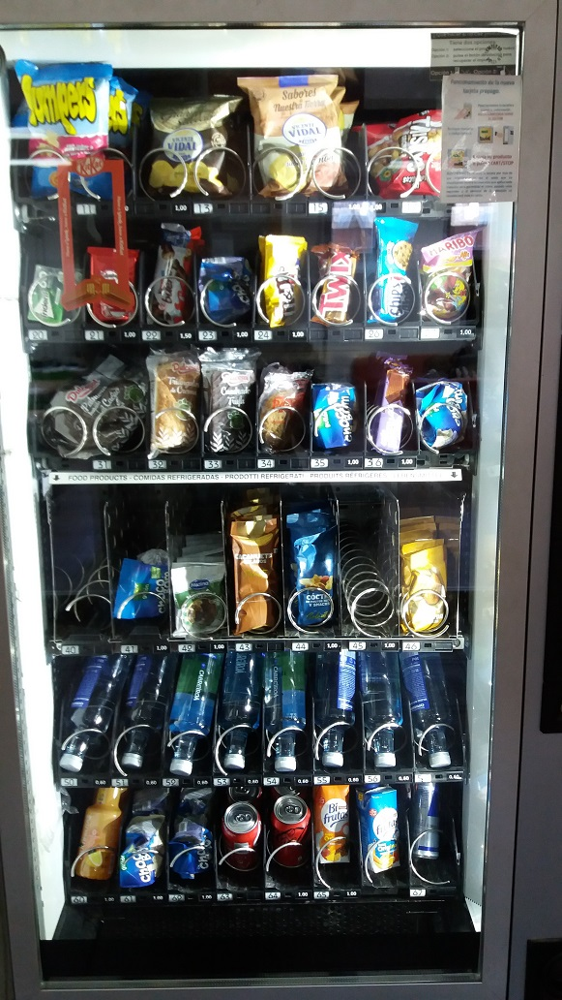
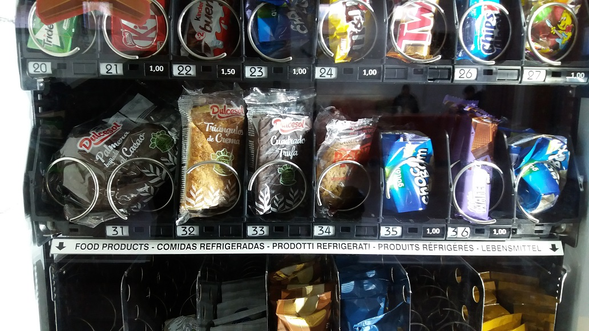
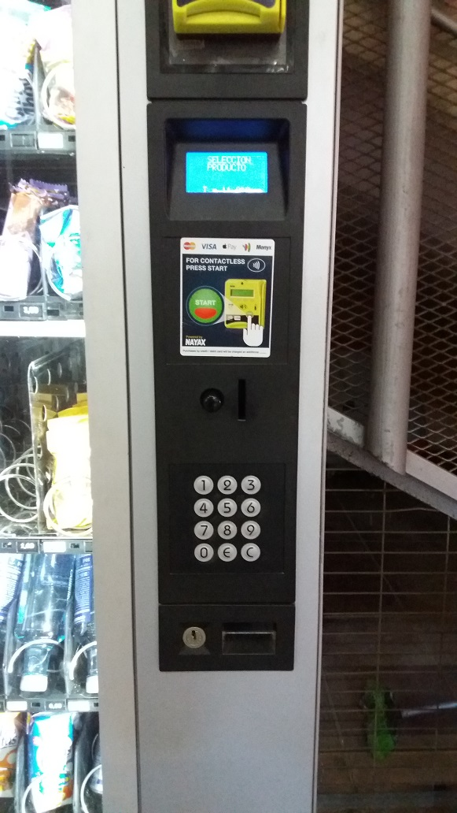

Como se puede apreciar en
la siguiente foto los productos están organizados por filas
y columnas, de forma que cada producto es identificado con un
código numérico de dos dígitos:

La entrega de un producto
se realiza
haciendo girar un motor DC acoplado a la espiral correspondiente a la
línea de producto solilcitada; cuando la espiral da un giro
completo, el producto cae al compartimento de salida.
A la hora de comprar el
producto, y tras
realizar el pago, el usuario introduce el código
numérico del producto deseado a través del un
teclado
matricial mostrado en esta foto:
